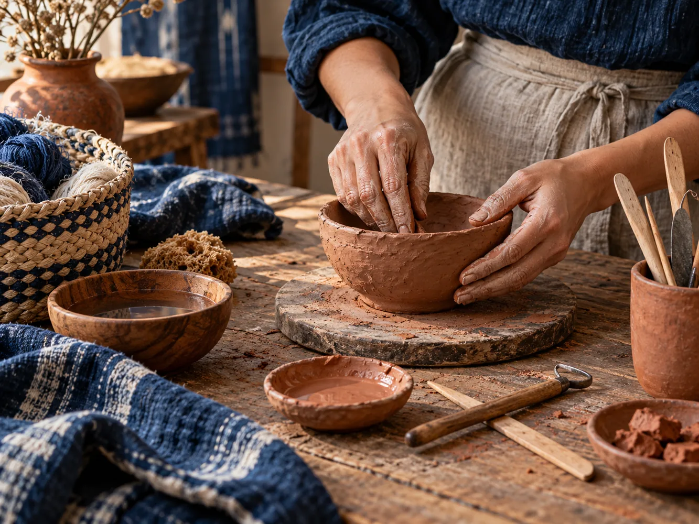

Websites
Complete, polished websites that explain the business clearly and make action easy.
Strategy / Design / BuildCanadian digital studio
Custom websites and digital experiences shaped around the people and work behind your business.
Led by a First Nations designer based in Ontario.
Built in Canada for Canadian businesses, so more of your investment stays here.
Designed to be clear, fast, and easy to use on phones, tablets, and computers.
You will know what we are building, what it costs, and what happens next before work begins.
Web / UX / Development
Structure, writing, interaction, and development are planned together so customers can understand your business and reach you easily.
What we build
Complete, polished websites that explain the business clearly and make action easy.
Strategy / Design / BuildFocused interfaces and interactive concepts designed for a specific audience and purpose.
Interaction / AccessibilityHuman-centred decisions grounded in how people understand, navigate, and trust technology.
Research / Structure / TestingCustom interactions and focused functionality for digital products with specific needs.
Responsive / MaintainableMICA / INTERFACE STUDIES
Original interface studies exploring possible design directions. They demonstrate MICA’s visual range and are not presented as completed client projects.
Mental health / Immediate support
Three modules connected. One clear flow.
Technology / Product architecture
Choose one thing for today.
Calm experience / Everyday planning
Arts / Dramatic editorial

Pet care / Editorial lifestyle

Restaurant / Menu-first / Seasonal menu, Ottawa
Repairs, upkeep, and seasonal help.
Request an estimateLocal service / Clear decisions
House / Ottawa
Adaptive reuse
Architecture / Project archive
Children’s learning / Playful access
Independent advice for important decisions.
Professional services / Trust & clarity
Arts & culture / Experimental navigation
Community information / Accessible directory
Editorial restraint / Quiet, material-led presentation
Local business energy / Bold, direct service information
Professional clarity / Restrained advisory interface
Creative expression / Playful, high-contrast composition
Product interface / Technical system overview
Accessible information / Clear, scannable hierarchy

Whisked Away / Conceptual bakery interface
Technology / Speculative systems interface
Construction / Local project planning
Product company / Diagonal editorial system
Interior design / Spatial editorial

Bedding / Tactile product editorial

Craft studio / Handmade goods and process

Local pub / Bar and grill atmosphere
Project process
We clarify what the website needs to say, show, and help customers do.
Structure, writing, visual design, and development move forward as one connected project.
We launch it, show you how it works, and hand over the keys.
Project inquiries